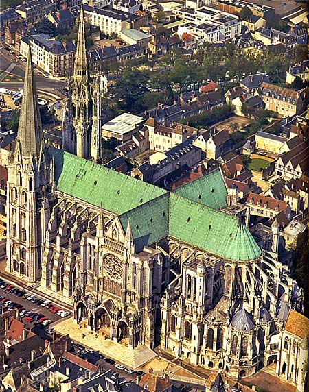

The first record of a cathedral at Chartres is from 743, when the town was sacked by the Duke of Aquitaine. It was sacked again by the Vikings in 858, and, when the cathedral was rebuilt, the emperor Charles the Bald (Charlemagne's grandson) gave it the relic known as the Sancta Camisia, supposedly the tunic worn by the Virgin Mary ("Notre Dame" = "our Lady") at the Annunciation or at the Nativity. In 1020, a fire destroyed most of the cathedral which had been dedicated in 858. Rebuilding began immediately, and was funded by donations from most of the nobility of France. A large U-shaped crypt, or cellar, is all that survives of this church. This church was extended toward the west after another fire in 1134. The western end of the church, which contained the main entrance, was rebuilt with large towers and elaborately carved doorways and windows between them. During the night of 10 June, 1194, yet another fire destroyed most of the city of Chartres, including much of the cathedral (the Sancta Camisia, however, was miraculously spared). The miracle of the relic apparently aroused great enthusiasm for the rebuilding of the cathedral even more magnificently. According to a text known as The Miracles of Notre Dame of Chartres, people gathered voluntarily in stone quarries in the thousands, and dragged carts full of stone five miles to the building site. The bishop, the kings and queens of France, members of the nobility, the king of Castile in Spain, and merchants and craftspeople all gave money for the construction and decoration. The construction was begun in 1194, and more or less finished by 1223, although the dedication did not take place until 1260. |
 (view of the cathedral from the air) |
Some additions and changes were made to the cathedral after 1260 (the steeple on the north tower was built in the sixteenth century), but in form it remains largely as it was originally built. Unlike many medieval religious structures, its decoration, especially its stained glass and sculpture, have remained largely intact also. The story goes that in the French Revolution, the cathedral was scheduled to be pulled down, but it was pointed out that this would be a very difficult task (where would they put all that stone?!), so the plan was abandoned. During the two World Wars, the stained glass was removed and stored in underground vaults, and thus escaped unharmed. The greatest danger to the cathedral now is pollution, and for the past 30 years an extensive program of cleaning and preservation has been undertaken to preserve the structure.
There are several excellent websites that give 360º virtual views of the cathedral from different spots inside and outside of it. Particularly good are Cathédrale Notre-Dame de Chartres and the same videos at MCAH.